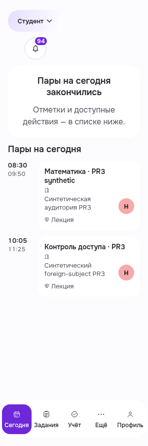
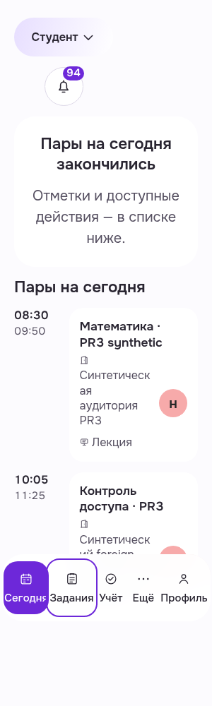
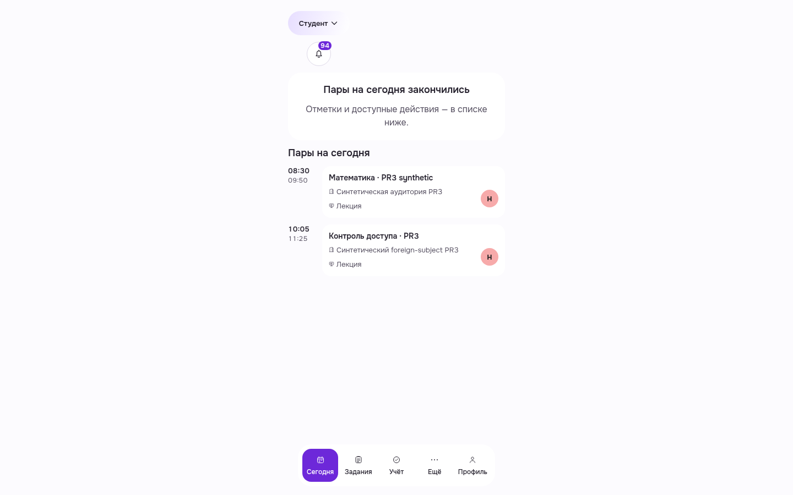
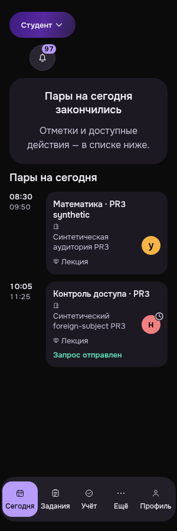
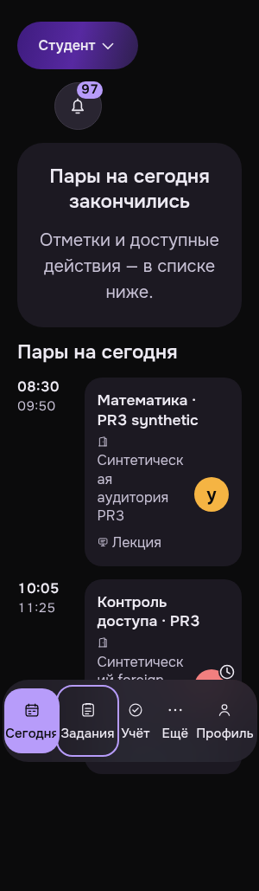

Shared mobile navigation: bounded correction
Sourcee715.5 originalPNG personallyviewed, onePWA+onecontrolledTMA ownnormalsession. Wholelabels at300 root16/root20, visibleTabfocus, targetminimum54.203×60/root16 and46×75/root20.1440light widecontrol preserved. Nativeownlogout204/guest401×2, no business/prefwrites, browserclosed.
Root20 isbrowser-only visualstress. TMA SDKhost/HMAC/darksystemappearance explicitlysynthetic; actualAuth/data. NativeTelegramprovider unknown. Profile notrepeated; oldProfile300loading remainsqualified. Noallstate/wholeappreadyclaim.
Qualifiedcriteria/limits · Manifest/hash · OriginalcontrolledTMA before
PWA — исправленная навигация · light · 300 · root16
PWA-MOBILE-TODAY__postfix-nav__light__300__root16__e715bab97
Реальный Today завершившегося дня; пять целых подписей, минимальные цели44CSSpx сохранены. PWA через обычный собственный вход и OS light; API ответы не подменялись.

PWA — исправленная навигация · light · 300 · root20
PWA-MOBILE-TODAY__postfix-nav__light__300__root20__e715bab97
Реальный Today завершившегося дня; пять целых подписей, минимальные цели44CSSpx сохранены. Browser-only root20 stress и видимый фокус после Tab. PWA через обычный собственный вход и OS light; API ответы не подменялись.

PWA — исправленная навигация · light · 1440 · root16
PWA-MOBILE-TODAY__postfix-nav__light__1440__root16__e715bab97
Реальный Today завершившегося дня; пять целых подписей, минимальные цели44CSSpx сохранены. PWA через обычный собственный вход и OS light; API ответы не подменялись.

TMA — исправленная навигация · dark · 300 · root16
TMA-MOBILE-TODAY__postfix-nav__dark__300__root16__e715bab97
Реальный Today завершившегося дня; пять целых подписей, минимальные цели44CSSpx сохранены. Синтетический Telegram SDK/host/testHMAC, действительные Auth/session/domainAPI; native provider unknown.

TMA — исправленная навигация · dark · 300 · root20
TMA-MOBILE-TODAY__postfix-nav__dark__300__root20__e715bab97
Реальный Today завершившегося дня; пять целых подписей, минимальные цели44CSSpx сохранены. Browser-only root20 stress и видимый фокус после Tab. Синтетический Telegram SDK/host/testHMAC, действительные Auth/session/domainAPI; native provider unknown.
